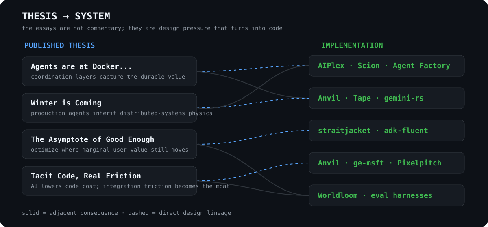

~/vamsi / systems.log
Vamsi Ramakrishnan
I build the machinery around models.
The model can improvise. The system should know what happened.
NOW / straitjacket — context economicsRECENT / anvil — legacy estatesBUILDING / worldloom — coherent synthetic enterprises
Start here
Writing → systems

GitHub · Essays · LinkedIn